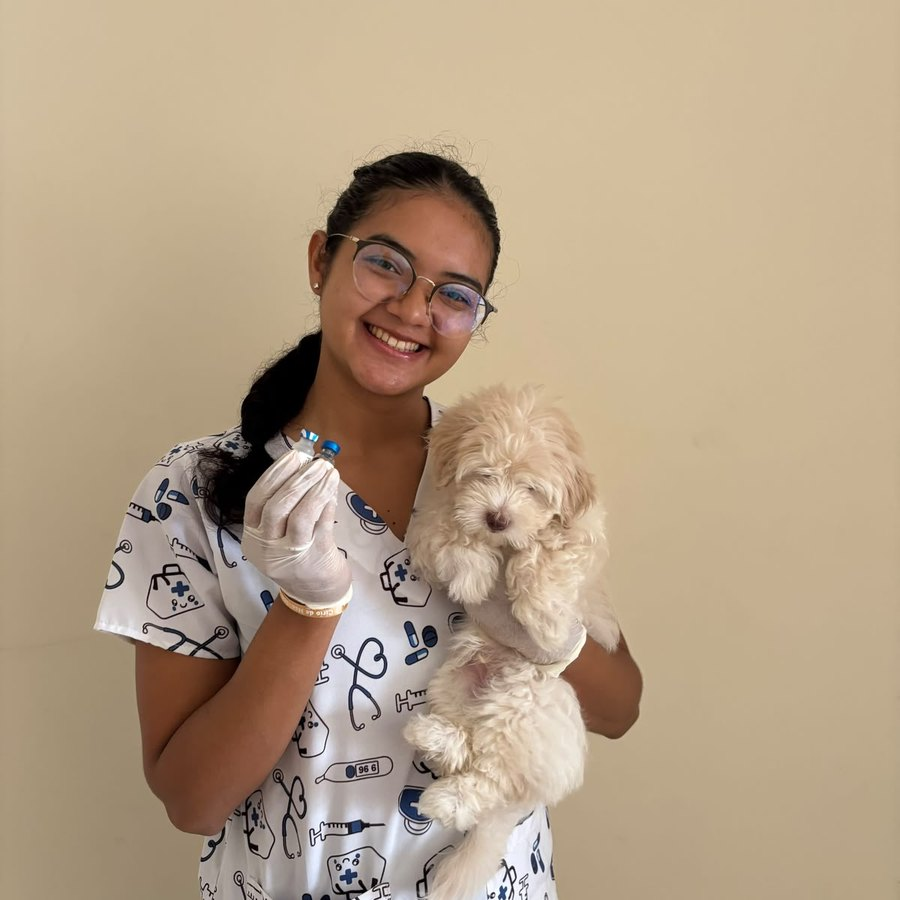
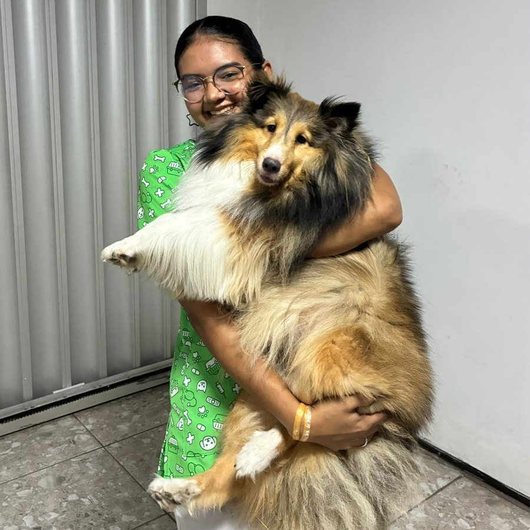
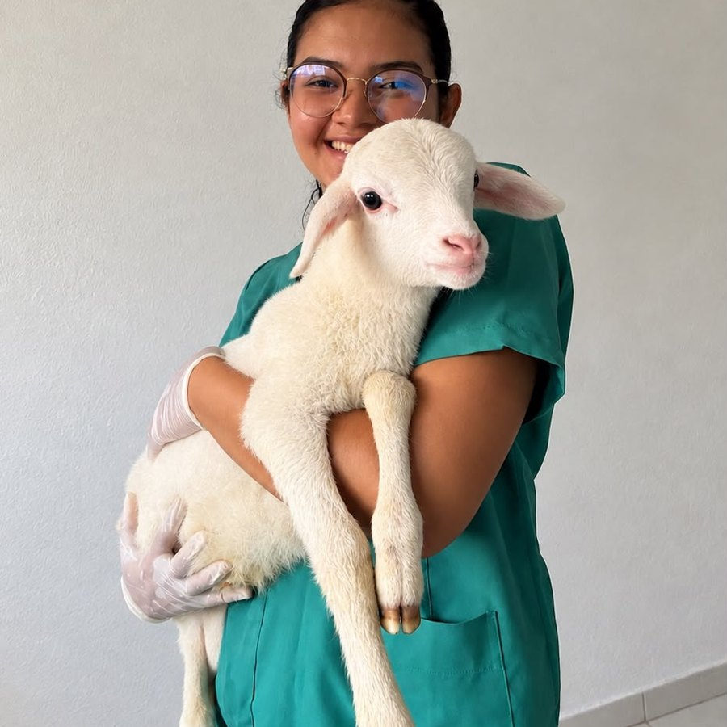
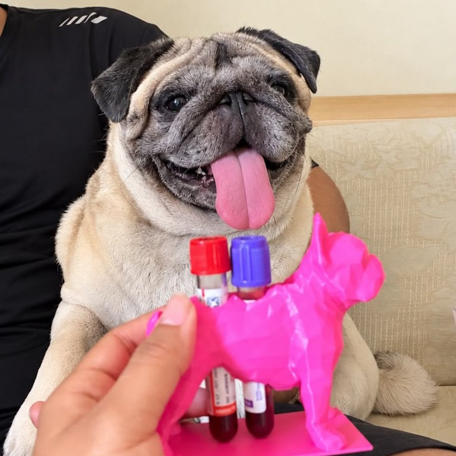
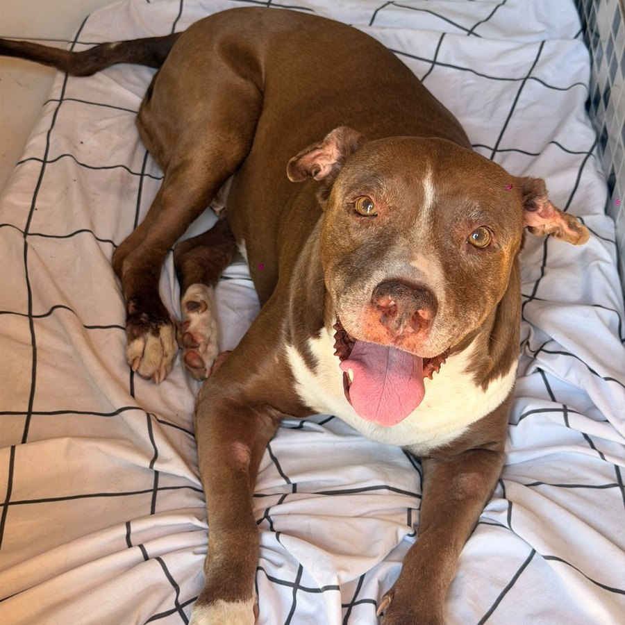
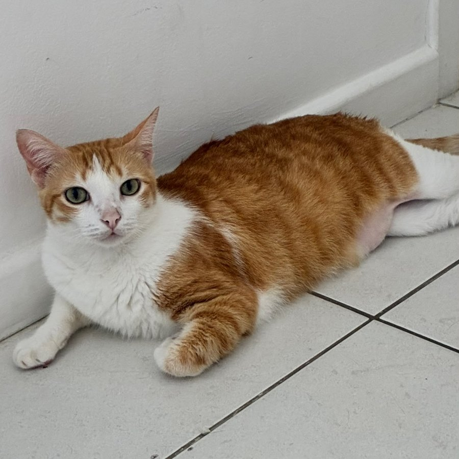

Consulta pet friendly
Consulta no conforto do seu lar, com manejo gentil e no tempo do seu pet, sem o estresse do transporte.
Consulta pet friendly, vacinas, exames e muito mais para o seu pet, sem estresse, sem fila e sem precisar sair de casa. Atendo em São Luís, Paço do Lumiar e São José de Ribamar.
Médica Veterinária · CRMV/MA 3384
Sou médica veterinária formada pela Universidade Estadual do Maranhão (UEMA) e levo o atendimento até a sua casa. Assim o seu pet é cuidado no lugar onde ele se sente mais seguro, sem o estresse do transporte e da sala de espera.
Faço consulta pet friendly, vacinação, exames laboratoriais e de imagem, curativos e muito mais a domicílio em São Luís, Paço do Lumiar e São José de Ribamar, sempre com calma, carinho e atenção a cada detalhe.
Tudo feito na sua casa, com o cuidado de um consultório e o conforto que só o lar do seu pet tem.
Consulta no conforto do seu lar, com manejo gentil e no tempo do seu pet, sem o estresse do transporte.
Coleta de amostras para exames laboratoriais e realização de exames de imagem (ultrassom, radiografia e ecocardiograma).
Vacinas e vermífugos aplicados em casa, com orientação sobre o calendário ideal para o seu pet.
Aplicação dos medicamentos do tratamento do seu pet com segurança e orientação para o tutor.
Cuidado e troca de curativos em casa, para uma recuperação mais tranquila e confortável.
Aferição da pressão arterial com doppler, importante no acompanhamento de pets idosos ou em tratamento.
Medição da glicose no sangue, essencial no acompanhamento de pets diabéticos.
Emissão de atestado de saúde para o seu pet viajar com segurança e tranquilidade.
Conte o que o seu pet precisa: consulta, vacina, exame, curativo...
Escolhemos juntos o melhor dia e horário para a visita.
Vou até você e cuido do seu pet com calma e carinho.
Orientações e acompanhamento depois da visita.
Atendimento domiciliar nestas cidades. Me chama no WhatsApp com o seu bairro para combinarmos a visita.
Cada atendimento é cheio de carinho, e alguns rendem fotos lindas.






Entre em contato para conhecer mais dos meus serviços e agendar a consulta do seu pet! Pelo formulário, a mensagem já chega prontinha no meu WhatsApp.